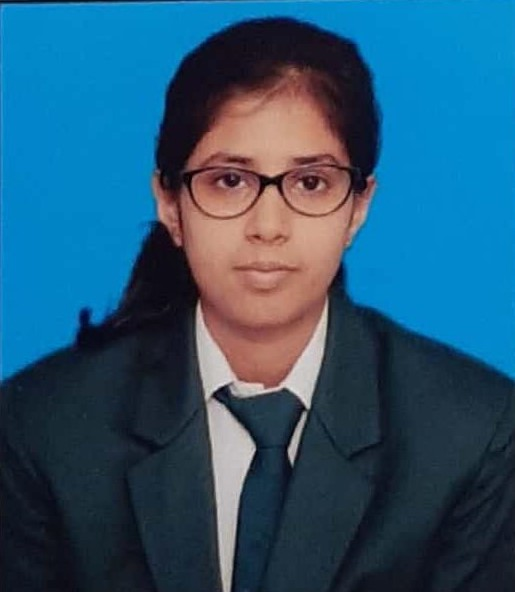

Anshika Singh

Summary
A motivated, passionate student keeping up with the pace and changing times, pursuing Integrate M.Sc. course in Mathematics and Computing. In my three years at BIT, Mesra, I have completed a great deal of coursework on problem solving skills, learnt various programming languages and also aquired knowledge of Advanced mathematics. Committed to continuous learning and making a meaningful impact.I possess a solid foundation to contribute to the success of any organization.
Education
- Sacred Heart School, Ranchi, Jharkhand- passed with 92%
- Delhi Public School, Ranchi, Jharkhand-passed with 89%
- Birla Institute of Technology, Ranchi- currently pursuing Integrated Master in Science in Mathematics and Computing with average CGPA 8.3
Work Experience
Fresher looking for an Internship
Skills
Technological Skills
- C++
- SQL
- C
- Java
- Python
- HTML
- CSS
- DSA
- Advanced Mathematics
Interpersonal Skills
- Leadership
- Communication
- Ability to work under pressure
- Time Management
Projects
- Multi criteria decision making (MCDM) project in Microsoft excel
- SQL project on Banking Transaction System.
Activities
- Joint President of NSS, Bit, Mesra
- Ranked top 5 in Internal Hackathon for Kavach, 2023
- Secured top 20 in among 150 students in 10th board in school
- Got certificate of appreciation in DSA Quiz
- Attended webinar Hack-n-Slash
- Organized many blood donation camps
Intrests
- Volunteering and community involvement
- Cooking
- Painting